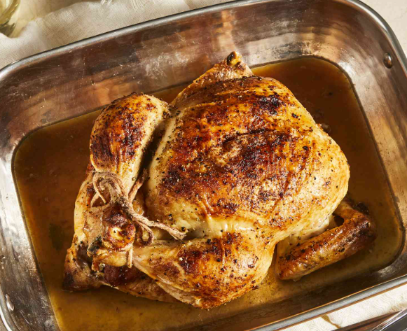

Juicy Roasted Chicken
Home

Description
This roasted chicken is perfectly seasoned and cooked just the way my
grandmother used to make it. The method used in this recipe results in the
juiciest chicken! We loved to nibble on the celery after it was cooked.
Ingredients
- 1 (3 pound) whole chicken, giblets removed
- salt and black pepper to taste
- 1 tablespoon onion powder, or to taste
Directions
- Gather all ingredients
- Preheat the oven to 350 degrees F (175 degrees C)
-
Place chicken in a roasting pan; season generously inside and out with
onion powder, salt, and pepper. Place 3 tablespoons of butter in chicken
cavity; arrange dollops of remaining butter on the outside of chicken.
- Cut celery into 3 or 4 pieces; place in the chicken cavity.